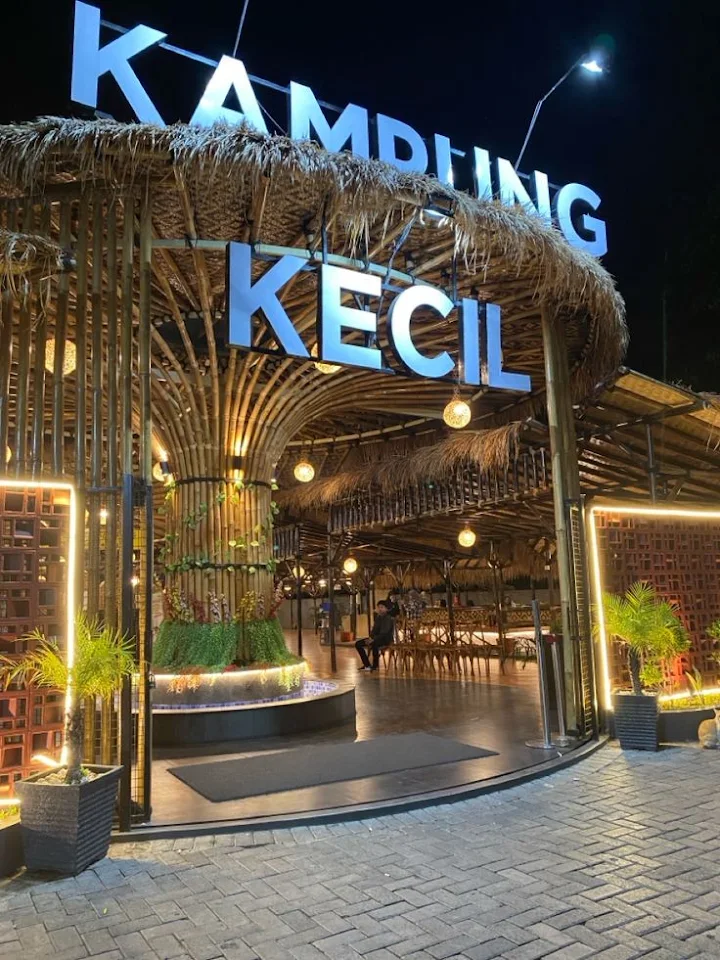
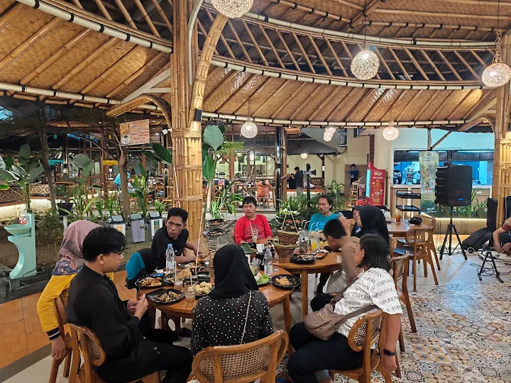

Lihat dulu,
baru jatuh hati.
Jelajahi beberapa sudut yang membuat pengalaman makan di Kampung Kecil terasa berbeda.





Jelajahi beberapa sudut yang membuat pengalaman makan di Kampung Kecil terasa berbeda.

